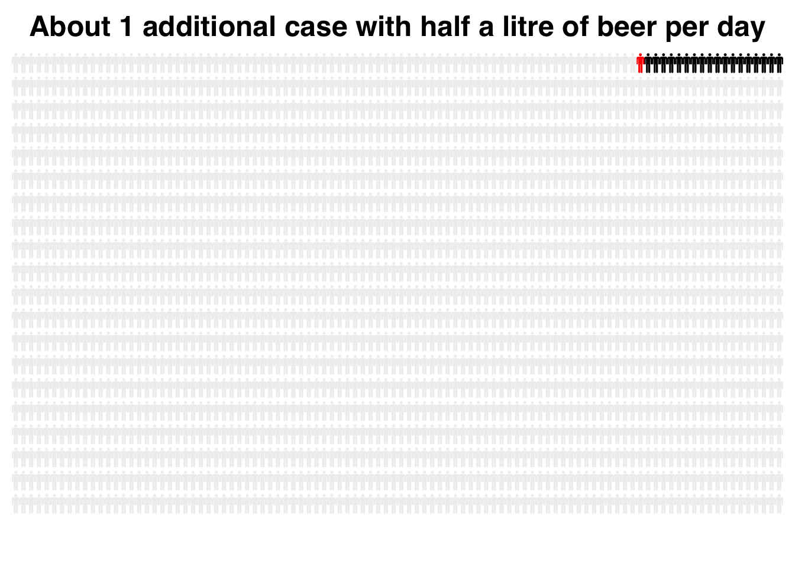

Chapter 7 Data Exploration
Data exploration is one of the most important aspects of data science and forms the cornerstone of my drills. Nonetheless, I have lots of room for improvement.
I like Hadley Wickham’s writing and find his approach exceptionally clear. Therefore, I’ll use the tidyverse.
library(tidyverse)7.1 Counting things. The naming of parts.
starwars %>%
filter(!is.na(species)) %>%
count(species = fct_lump(species, 5), sort = TRUE) %>%
mutate(species = fct_reorder(species, n)) %>%
ggplot(aes(species, n)) + geom_col() + coord_flip()Figure 7.1: Starwars Figure 1
I like stacked bars for their economy, but it’s easy to over do it. Supperimposing gender onto the columns seems easy…
starwars %>%
filter(!is.na(species)) %>%
count(species = fct_lump(species, 5), gender = fct_lump(gender,
2), sort = TRUE) %>%
mutate(species = fct_reorder(species, n)) %>%
ggplot(aes(species, n, fill = gender)) + geom_col() + coord_flip()Figure 7.2: Starwars Figure 2
But note that I’ve got a problem: the Droids, which outnumber the Gungans, are now reordered to after the Gungans. This happens because the \(n\) that we’re counting comprises subcategories of species and gender. Only three Gungan males exist (and no females), but that is enough to tie the Droid NA category. The Droid NA category come after the Gungan category, presumably because male comes before NA, or because NA comes last (more likely).
Exploring this, I see that I’m getting warning messages about the implicit NA’s in gender. Note that the following renders a slightly different plot. I still have not fixed the order of the species.
starwars %>%
filter(!is.na(species)) %>%
count(species = fct_lump(species, 5), gender = fct_lump(gender,
2), sort = TRUE) %>%
mutate(gender = fct_explicit_na(gender), species = fct_reorder(species,
n)) %>%
ggplot(aes(species, n, fill = gender)) + geom_col() + coord_flip()
Figure 7.3: Starwars Figure 3
The trick here is to use group_by() and ungroup() wisely.
starwars %>%
filter(!is.na(species)) %>%
mutate(species = fct_lump(species, 5)) %>%
group_by(species) %>%
mutate(typeCount = n()) %>%
ungroup() %>%
mutate(species = fct_reorder(species, typeCount)) %>%
ggplot() + geom_bar(aes(species, fill = gender)) + coord_flip()
Figure 7.4: Starwars Figure 4
As opposed to using count(), which progressively narrows the information available to be used, by using group_by()/mutate()/ungroup() with geom_bar() we have all of the variables still available for plotting.
7.2 fct_infreq
As expected, Hadley Wickham and Garrett Grolemund solve this more simply in R4DS:
starwars %>%
filter(!is.na(species)) %>%
mutate(species = fct_lump(species, 5)) %>%
mutate(species = species %>%
fct_infreq() %>%
fct_rev()) %>%
ggplot() + geom_bar(aes(species, fill = gender)) + coord_flip()
Figure 7.5: Starwars Figure 5. Serial mutates are used.
Note that a single mutate() suffices to both lump factors, organize by frequency and reverse the order, as follows.
starwars %>%
filter(!is.na(species)) %>%
mutate(species = fct_lump(species, 5) %>%
fct_infreq() %>%
fct_rev()) %>%
ggplot() + geom_bar(aes(species, fill = gender)) + coord_flip()Figure 7.6: Starwars Figure 6. A single mutate is used.
7.3 Weight weight, don’t tell me!
One feature of count() is difficult for me to remember, mostly because it is not a count–it is a sum.
df <- tibble(Symbol = c("a", "b", "c", "c", "d", "e"), Value = 1:6)
df %>%
count(Symbol, sort = TRUE)## # A tibble: 5 × 2
## Symbol n
## <chr> <int>
## 1 c 2
## 2 a 1
## 3 b 1
## 4 d 1
## 5 e 1df %>%
count(Symbol, wt = Value, sort = TRUE)## # A tibble: 5 × 2
## Symbol n
## <chr> <int>
## 1 c 7
## 2 e 6
## 3 d 5
## 4 b 2
## 5 a 1The above example shows that count() performs in the usual way unless we use the wt = argument, which then sums the value specified and generates n, which now indicates a weight, not a count of a nominal variable.
7.4 Summarize is another very useful function:
starwars %>%
filter(!(is.na(species))) %>%
group_by(species) %>%
summarize(n = n(), mean = mean(height, na.rm = TRUE)) %>%
arrange(desc(n))## # A tibble: 37 × 3
## species n mean
## <chr> <int> <dbl>
## 1 Human 35 177.
## 2 Droid 6 131.
## 3 Gungan 3 209.
## 4 Kaminoan 2 221
## 5 Mirialan 2 168
## 6 Twi'lek 2 179
## 7 Wookiee 2 231
## 8 Zabrak 2 173
## 9 Aleena 1 79
## 10 Besalisk 1 198
## # … with 27 more rows7.5 Graphical displays
At the risk of biting off far more than I can chew without starting a separate chapter on my favorite data displays, I’d like to include a few plots not represented elsewhere.
7.5.1 Joyplots
Joyplots are a little hokey but can be visually satisfying.
library(ggridges)The following display is from data taken from The Cancer Genome Atlas in 2017. It combines glioblastoma with lower grade infiltrating gliomas. Since I’m only interested in diagnosis and patient age, that’s all that I’ve assembled in the CSV.
DiffuseGlioma <- read_csv("data/tcga9.11.17.csv")## Rows: 1122 Columns: 2## ── Column specification ────────────────────────────────────────────────────────
## Delimiter: ","
## chr (1): HISTOLOGY
## dbl (1): AGE##
## ℹ Use `spec()` to retrieve the full column specification for this data.
## ℹ Specify the column types or set `show_col_types = FALSE` to quiet this message.DiffuseGlioma <- na.omit(DiffuseGlioma) #gets rid of the NA's
head(DiffuseGlioma)## # A tibble: 6 × 2
## HISTOLOGY AGE
## <chr> <dbl>
## 1 astrocytoma 31
## 2 astrocytoma 67
## 3 astrocytoma 44
## 4 astrocytoma 37
## 5 astrocytoma 50
## 6 oligodendroglioma 47ggplot(DiffuseGlioma,aes(x=AGE,y=HISTOLOGY)) +
geom_density_ridges(rel_min_height = 0.01) + # removes tails
scale_y_discrete(expand = c(0.01, 0)) + # removes cutoff top
labs(x="age (y)",y="number") +
theme_minimal()## Picking joint bandwidth of 4.167.6 Relative versus absolute risk
Relative risk is often used in medical literature to emphasize the importance of a finding–it often makes a result sound more impressive. However, when one considers absolute risk, the effect is obviously much smaller.
The following is adopted from https://www.r-bloggers.com/lying-with-statistics-one-beer-a-day-will-kill-you/
personograph allows for cute displays of individuals in big groups
library(personograph)Start with 2000 people. Some of them will have problems without alcohol exposure, about 18, in fact. The blogger choses 2000 people to start with because \(0.7*18=1\)
Note that this doesn’t stratify for any other health problems, age, socio-economic status, etc.
n <- 2000
probl_wo_alc <- 18/n
data <- list(first = probl_wo_alc, second = 1 - probl_wo_alc)
personograph(data, colors = list(first = "black", second = "#efefef"),
fig.title = "18 of 2000 people with health problems", draw.legend = FALSE,
n.icons = n, dimensions = c(20, 100), plot.width = 0.97)Now we illustrate the affect of 500 mL of alcohol per day. According to the Lancet article, the relative risk of serious illness following consumption of about 25 mL ethanol (500 mL beer at 5% ABV) increases by about 7%.
probl_w_alc <- 1/n
data_2 <- list(first = probl_wo_alc, second = probl_w_alc, third = 1 -
(probl_wo_alc + probl_w_alc))
personograph(data_2, colors = list(first = "black", second = "red",
third = "#efefef"), fig.title = "About 1 additional case with half a litre of beer per day",
draw.legend = FALSE, n.icons = n, dimensions = c(20, 100),
plot.width = 0.97)
7.7 Removing duplicates
The following is taken from https://www.r-bloggers.com/2021/08/how-to-remove-duplicates-in-r-with-example/.
data <- data.frame(Column1 = c("P1", "P1", "P2", "P3", "P1",
"P1", "P3", "P4", "P2", "P4"), Column2 = c(5, 5, 3, 5, 2,
3, 4, 7, 10, 14))
data## Column1 Column2
## 1 P1 5
## 2 P1 5
## 3 P2 3
## 4 P3 5
## 5 P1 2
## 6 P1 3
## 7 P3 4
## 8 P4 7
## 9 P2 10
## 10 P4 14Note the duplication of rows with P1 and 5. The whole row can be removed as follows.
distinct(data)## Column1 Column2
## 1 P1 5
## 2 P2 3
## 3 P3 5
## 4 P1 2
## 5 P1 3
## 6 P3 4
## 7 P4 7
## 8 P2 10
## 9 P4 14Reduplicated information in a column can also be removed:
distinct(data, Column2)## Column2
## 1 5
## 2 3
## 3 2
## 4 4
## 5 7
## 6 10
## 7 14To remove duplicates from a column but to keep all the information in Column1:
distinct(data, Column2, .keep_all = TRUE)## Column1 Column2
## 1 P1 5
## 2 P2 3
## 3 P1 2
## 4 P3 4
## 5 P4 7
## 6 P2 10
## 7 P4 14The duplicated function can also be used.
duplicated(data)## [1] FALSE TRUE FALSE FALSE FALSE FALSE FALSE FALSE FALSE FALSEdata[!duplicated(data), ]## Column1 Column2
## 1 P1 5
## 3 P2 3
## 4 P3 5
## 5 P1 2
## 6 P1 3
## 7 P3 4
## 8 P4 7
## 9 P2 10
## 10 P4 14Finally, unique is also useful:
unique(data)## Column1 Column2
## 1 P1 5
## 3 P2 3
## 4 P3 5
## 5 P1 2
## 6 P1 3
## 7 P3 4
## 8 P4 7
## 9 P2 10
## 10 P4 14